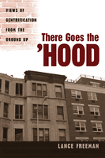

How does gentrification affect residents who stay in the neighborhood?
How does gentrification affect residents who stay in the neighborhood?


 How does gentrification affect residents who stay in the neighborhood?
How does gentrification affect residents who stay in the neighborhood?

|  |
There Goes the 'HoodViews of Gentrification from the Ground UpLance Freemanpaper EAN: 978-1-59213-437-3 (ISBN: 1-59213-437-8) |
Winner of the Urban Affairs Association Best Book Award, 2007
"There Goes the 'Hood reveals the complexity of the gentrification process, particularly in terms of the meaning the process has for indigenous residents and the disparate forms it takes. Using a refreshing methodological approach, Freeman offers a nuanced lens to understand conceptualizations of gentrification and weigh its differential impact."
—Michael Maly, author of Beyond Segregation: Multiracial and Multiethnic Neighborhoods in the United States
In this revealing book, Lance Freeman sets out to answer a seemingly simple question: how does gentrification actually affect residents of neighborhoods in transition? To find out, Freeman does what no scholar before him has done. He interviews the indigenous residents of two predominantly black neighborhoods that are in the process of gentrification: Harlem and Clinton Hill, Brooklyn. By listening closely to what people tell him, he creates a more nuanced picture of the impacts of gentrification on the perceptions, attitudes and behaviors of the people who stay in their neighborhoods.
Freeman describes the theoretical and planning/policy implications of his findings, both for New York City and for any gentrifying urban area. There Goes the 'Hood provides a more complete, and complicated, understanding of the gentrification process, highlighting the reactions of long-term residents. It suggests new ways of limiting gentrification's negative effects and of creating more positive experiences for newcomers and natives alike.
Excerpt available at www.temple.edu/tempress
"An important book. We know very little about black neighborhoods and how they are changing. There Goes the 'Hood will add much to the gentrification debates."
—Kathe Newman, Urban Planning and Policy Development, Rutgers University
"Focusing on New York City neighborhoods Harlem, in Manhattan, and Brooklyn's Clinton Hill, [Freeman] asks residents about everything from widespread retail development to expensive apartments and residential developments. What he uncovers is a 'nuanced reaction toward gentrification.... welcome by some and feared and loathed by others, and even dreaded and welcomed at the same time by the same people.' It's Freeman's pursuit of this duality that makes the book strong—he's willing to admit that gentrification is both a pleasure and a problem, rather than setting up camp on one side.... That sense of balance, combined with the powerful voices of the folks involved, that makes this study important and informative."
—Publishers Weekly
"Its level-headed consideration of who's moving on up and who they're forcing to move on out splits the difference between grandstanding and bet-hedging.... [it's] less a diatribe than an open-ended dialogue...Freeman [shows] real people's multifaceted responses to a multifaceted phenomenon. The result is a Januslike portrait of gentrification that's nuanced but makes a strong point: that true racial and economic diversity in America's inner cities faces imminent apocalypse-unless the policymakers shaping urban space stop choosing sides."
—The Washington City Paper
"When it comes to the classic issue of gentrification, the process is often viewed from the standpoint of the new people moving in, not those who have been there for years. [This] new book now gives the longtime residents of gentrifying neighborhoods their due, it’s called There Goes The ’Hood."
—From NPR’s "News and Notes with Ed Gordon"
"A welcome addition to the literature on gentrification in US cities."
—Choice
"The book is written in clear, straightforward prose and Freeman is to be commended for his original approach, [and] for his mixed-methods strategy...[T]his is a well-researched, well-written and interesting book, but deeply controversial and likely to be used by promoters of gentrification as a very solid academic endorsement."
—Housing Studies
"In There Goes the ‘Hood, Freeman is much more critical of the gentrification process, and it is his critique that is the substantive impact of this book. The impact is strongest where he argues against the much heralded poverty deconcentration thesis in the United States, in programmes like HOPE VI and Moving to Opportunity…[T]his book is well worth reading. It is motivated by pragmatic concerns about how planning and policy can create more just and livable cities, concerns that I and many others share. Given the way that gentrification is being promoted by urban policy makers worldwide as the solution for inner-city woes this book provides a more balanced view of the pros and cons of gentrification than most to date."
—Environment and Planning A
"There Goes the ‘Hood focuses on the experience of gentrification and in that regard it is an important work in the ongoing struggles over neighborhood change. By being honest about race, by focusing strongly on human beings and their stories, and by setting a strong goal of nuanced storytelling, Freeman has consciously opened more doors for future research than he has closed. For anyone interested in the subject, and especially those interested in contributing their voice to the growing literature, it is a worthwhile and important read."
—The Berkeley Planning Journal
"There Goes the ‘Hood represents a new complementary approach to research on gentrification.…The book is well worth reading for urban geographers and planners, especially because Freeman presents a balanced view that takes both the good and the bad sides of gentrification into account and brings out the indigenous residents’ perception of the process."
—The Journal of Housing and the Built Environment
"I am recommending this book highly…[it] is a substantial contribution to the literature on gentrification and, additionally, to the literature on predominantly African American neighborhoods."
—Urban Affairs Review
Acknowledgments
1. Introduction
2. The Evolution of Clinton Hill and Harlem
3. There Goes the 'Hood
4. Making Sense of Gentrification
5. Neighborhood Effects in a Changing 'Hood
6. Implications for Planning and Policy
7. Conclusion
Appendix: Methodology
References
Index
 | Lance Freeman is Assistant Professor, Graduate School of Architecture, Planning and Preservation, Columbia University. |
Urban Studies
Political Science and Public Policy
Race and Ethnicity
© 2015 Temple University. All Rights Reserved. This page: http://www.temple.edu/tempress/titles/1827_reg.html.